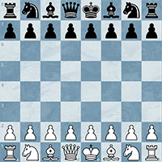
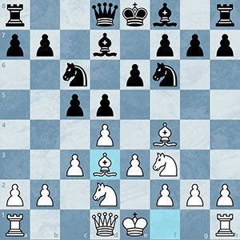

This is the starting position of the chess board. There are thousands of openings that can arise from just a few moves from both sides making it near impossible to learn and memorize them all.
However, there are 2 main moves that are played much more often than any other starting move. 1.e4 and 1.d4. These are often accompanied by the pushing of blacks own center pawn, 1...e5 and 1...d5. These two opening are called the kings pawn and queens pawn openings, respectiviely because the king and queen pawns are the ones being pushed.
In the opening it is important to put your pieces on active squares to maximize their potential. An important rule to remember in the opening says don't move a piece twice until all your other pieces have been developed. Now, this rule like all rules, especially in chess, aren't to be followed wholeheartedly without responding to your opponents moves or if it is beneficial to your position.
If you don't want to learn a bunch of lines in your opening and what do if your oppenent plays x y or z, then learning a setup based opening may be for you. The most popular examples of this are the London opening or the Colle System. These openings place their pieces on the same square almost every time, making them very beginner friendly and easy to learn.
(Typical London Opening)